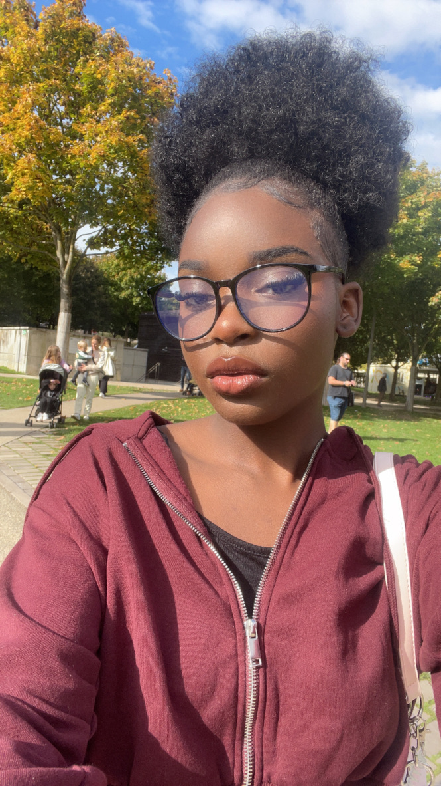

Développeuse web en reconversion passionnée par le front-end et la création d'interfaces modernes.
Je m'appelle Dorline Adelaar, développeuse web en reconversion. Après plusieurs expériences dans la restauration et le service client, j'ai décidé de me spécialiser dans le développement web.
Je me forme actuellement au développement front-end avec HTML, CSS et JavaScript en réalisant des projets pratiques et en construisant mon portfolio.